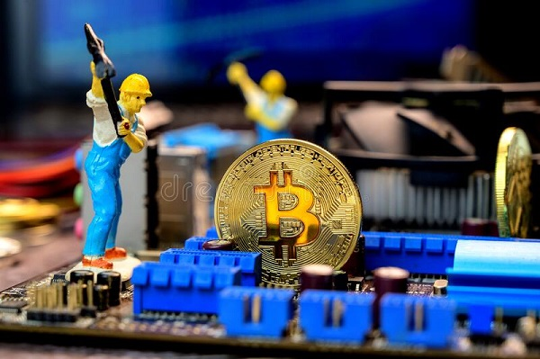

My Interests
Sport
Since I am very young I practice sport, football from my 8 years of my 14 years, followed by 3 years of handball and 2 years of strength training.
Team sports
Football and handball have allowed me to entertain myself and keep a social connection with my friends outside the classroom.
Muscle training
Since I do muscle training I am increasingly interested in personal development and self-improvement ,thanks to muscle training i have could improve my health and body. Thus, bodybuilding, in addition to benefit muscles, bones and get fit it also requires me to eat better day after day and to develop a good lifestyle.

New technology
Cryptocurrency

Cryptocurrency is a digital currency used on the Internet, independent of banking networks and linked to an encryption system. I am very interested in this technology because for me it will revolutionize a lot of domains, as for the moment internet with web 3 and many others.
Investment
I’ve been training for a while on cryptocurrency because I think it’s a way to make money. I think it’s really important to use your free time to learn more about a topic and an area that we’re passionate about.